Barichara · Santander · Colombia
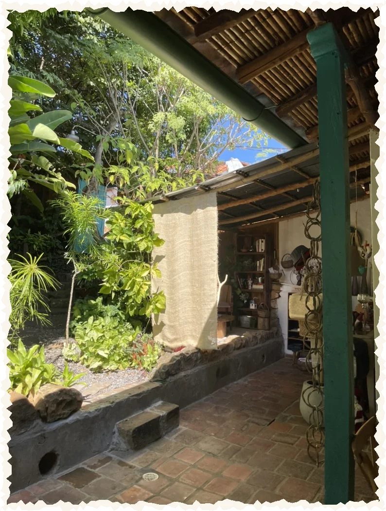
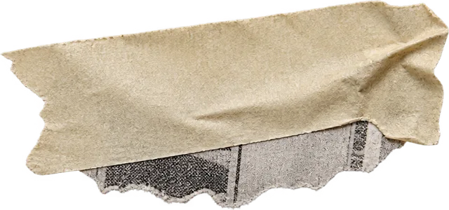
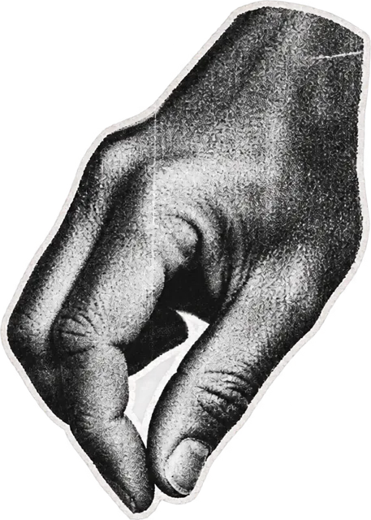
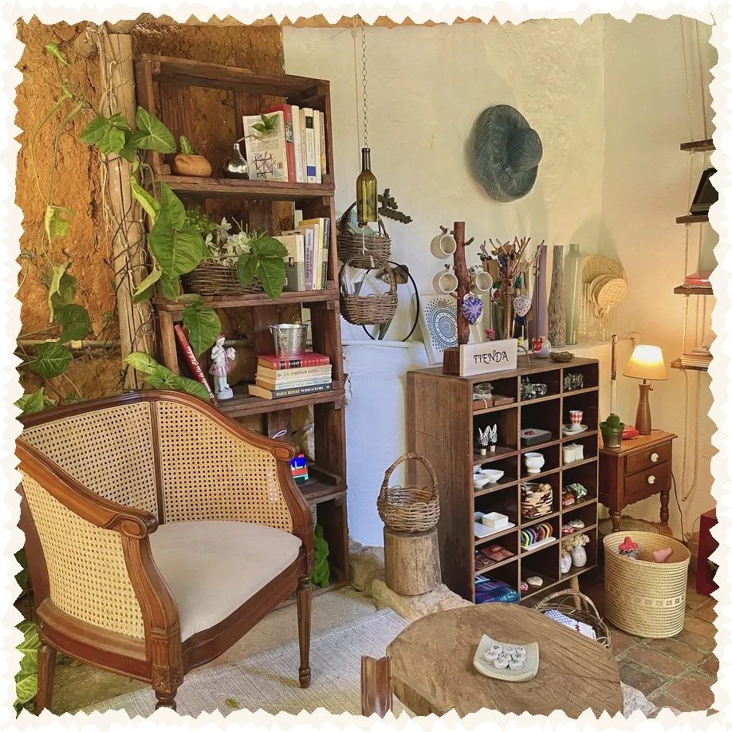
Yo trabajaba en el Café El Ángel, en medio del pueblo…
et je ne savais pas encore…
Capítulo 1
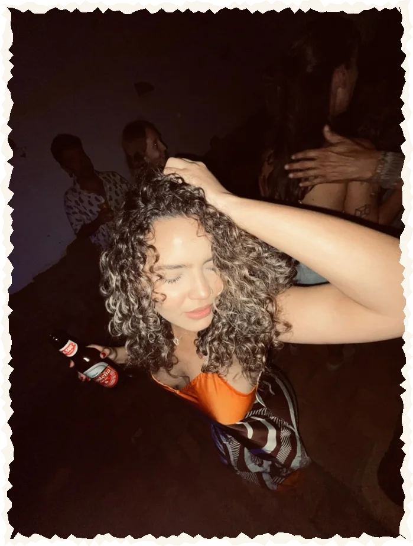
llegaste tú.
toi.
Y de repente, estabas en mi vida.
Caminábamos por Barichara, sin prisa.
on avait tout le temps
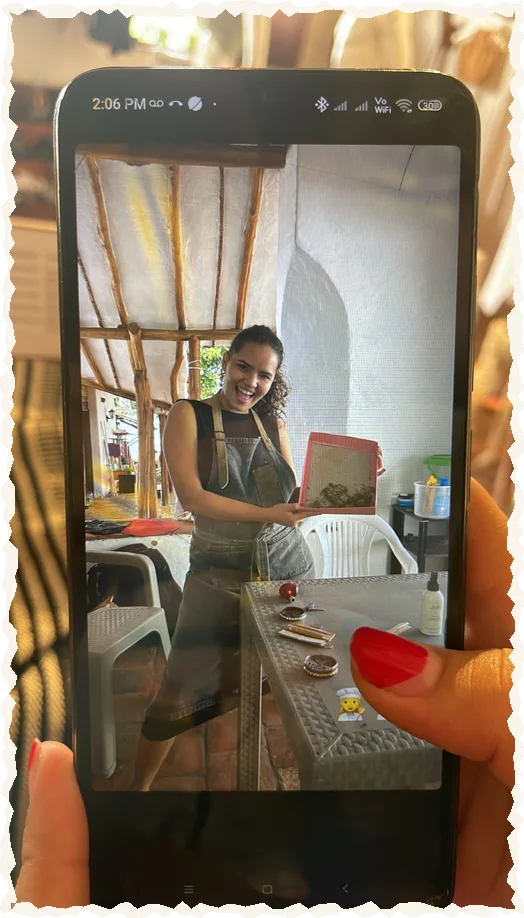
ta première photo dans mon téléphone
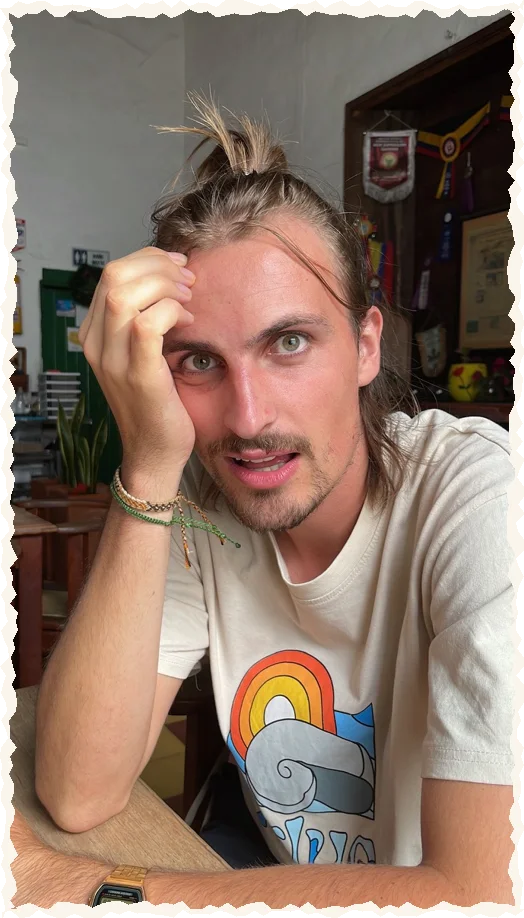
…et tu m'as relooké
La noche de velitas.
Capítulo 2 · el plan
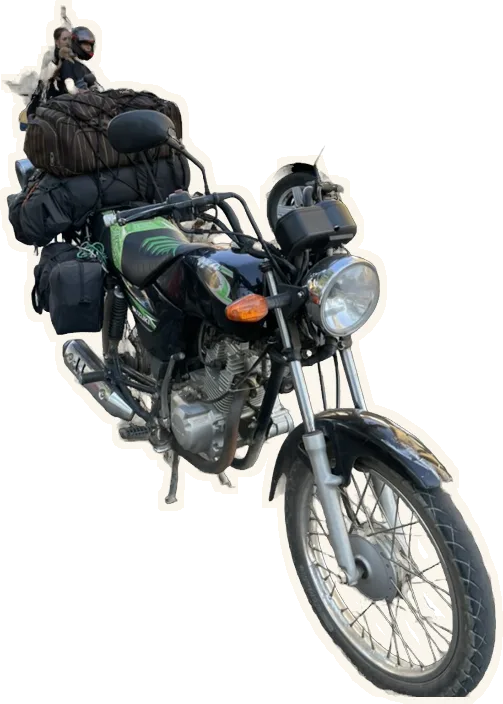
mochila mochila carpa ollareceta para un viaje
1 Suzuki AX4
2 mochilas
mucho coraje
mucha locura
On part ?
Capítulo 3 · la ruta
Capítulo 4 · Francia
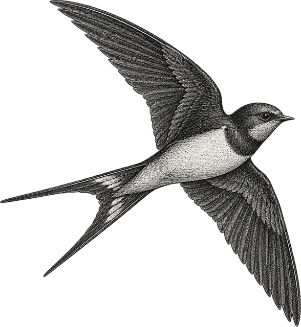
Y luego, la vida en Francia.
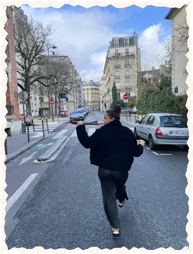
París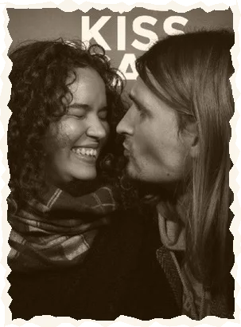
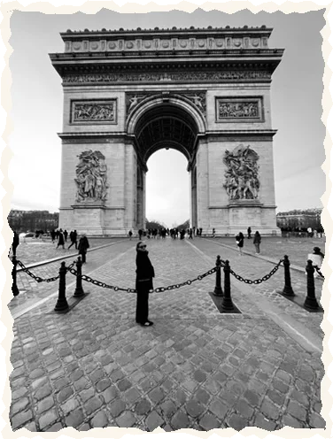
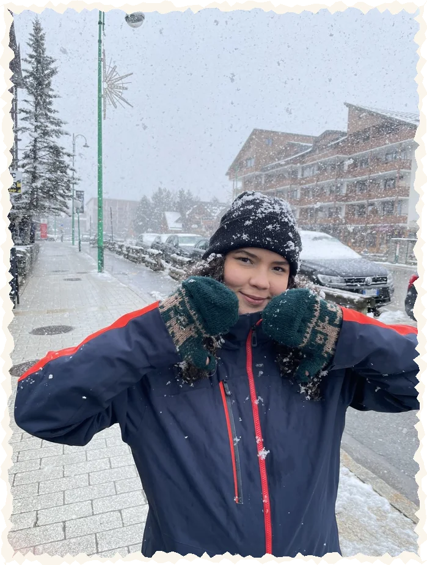
la nieve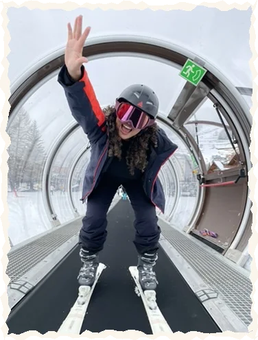
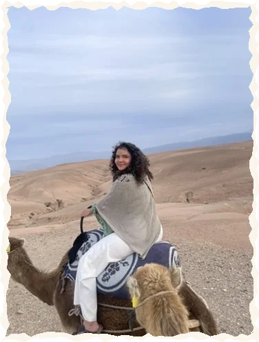
Marruecos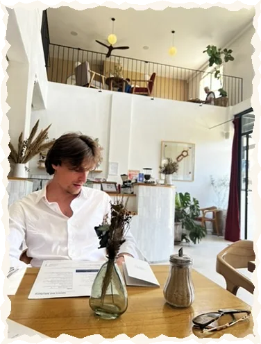
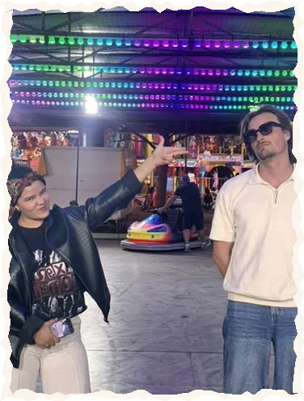
la feriaNos casamos en París. Tú, yo, y un «oui» con acento.
Luego, una mudanza de París… a París.
cartons, cartons, cartons…
Capítulo 5 · la boda
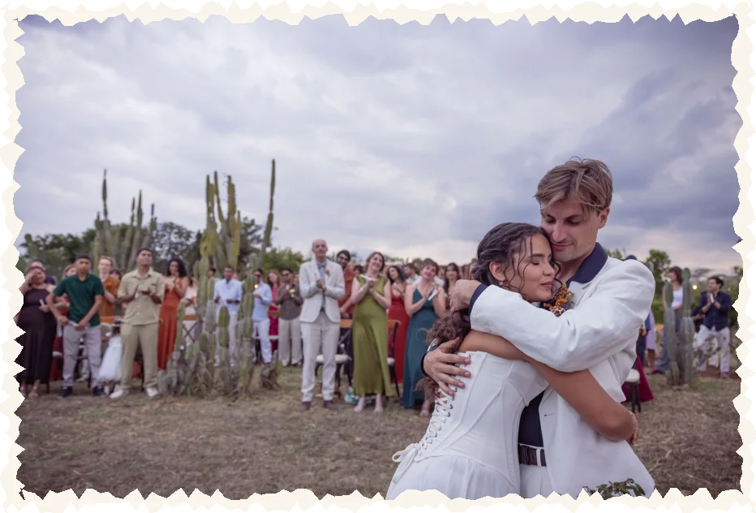
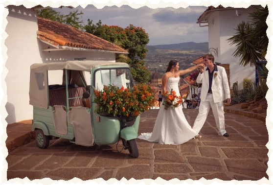
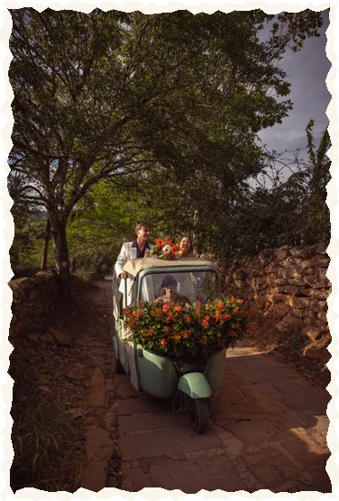
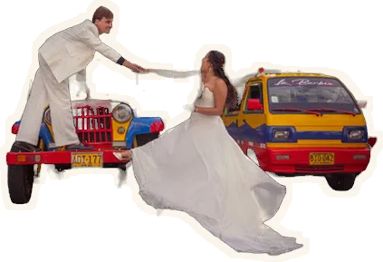
Serena del Viento, al borde del cañón, con todos los nuestros.
15 · 08 · 2026
deuxième « oui », même frisson
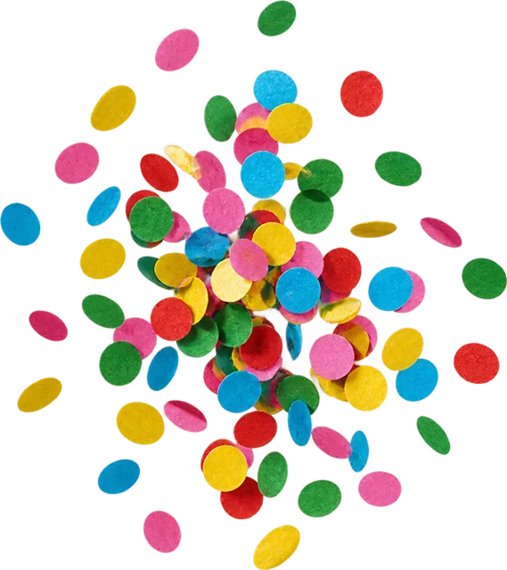
Y luego yo volví a París…
…y tú te quedaste en Barichara.
sept heures et un océan
Y entonces llegó el 22 de octubre.
22 · 10 · 2026
fais un vœu…
pide un deseo y sopla las velas
Nos perdimos la ocasión de celebrar tus 25 juntos.
Así que…
te regalo 25 citas para recuperar el tiempo.
25 séances de rattrapage, à Paris, avec moi.
Una por una, mes a mes, desde noviembre.
noviembre 2026 → octubre 2027
toca una carta pour la retourner